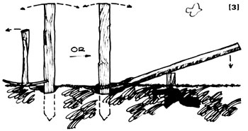
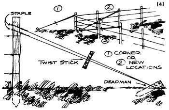
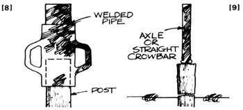
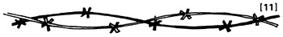
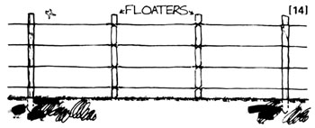

For over 50 years I've been building and repairing fences. I started as a young child just big enough to hand my dad staples and tools . . . and I'm still at it. Most of my fencing has been done alone, often from scratch, with very old salvaged posts and wire and I've never found such work to be difficult. All you need is time and patience, the information given by Sharon McAllister in MOTHER NO. 33 . . . and a few additional tips I'd like to pass on.
[1] First, about replacement of posts: Often an upright is broken off near the top, who the bottom is still sound. In that case a new length of wood can be wired or nailed to the old, or-if the stub is too short-partly buried in the ground. You'll frequently see this done on power or phone lines.
[2] I must emphasize that it's very wrong to set a replacement post into the same hole from which you've removed a rotten one. Bits of rot will remain in the ground and will soon start decay in the new wood. It's far better to dig a clean hole in a spot about a foot to either side of the original site.
[3] To remove a post from a hole (if the upright is long enough and strong enough to stand this kind of handling), dig out a good amount of earth three-quarters of the way around the base and rock the timber back and forth to loosen it. Then embed the pointed end of a long pick in the wood near the bottom of the post, rest the tool's head on solid ground, and pull back on the handle. Or dig out and rock the upright as described, loop a chain around the bottom of the post and then around one end of a fulcrum timber, lay the latter over an upright heavy block, and push down on the other end. Either method will save your back and temper.
If it's a round iron post you want to uproot, loosen it in the usual way and then try to rotate it. This often works like a charm. The same is true of round iron stakes-usually old axles-which are used to fasten down tents and buildings or to stake out animals . . . or which serve as deadmen (anchors for brace wires) at fence comers and the ends of clotheslines and plant supports.
[4] Deadmen, incidentally, are often simpler to make than braces and can tighten up a sagging fence or whatever very quickly and easily. The anchor itself can consist of a huge rock . . . or you can drive or set a post in the ground at a sharp angle, pointing away from the end post of the fence which is to be strengthened. If that arrangement locates the deadman on a neighbor's property or in a road, simply install the support a couple of posts up the line.
Next, find a length of heavy galvanized wire (either barbed or plain), run it around the top of the end fencepost, staple it there, and twist it back on itself. Carry the strand down around the deadman stake, post, or rock and back up to the starting point. Puff the wire as taut as possible with a wrecking bar (as shown in MOTHER NO. 33), and staple and twist it as before.
You now have two parallel strands, which should be twisted together with the aid of a strong stick (not your wrecking bar . . . you may not be able to extract it from the grip of the wire when you're done). The fence will tighten up just like magic, and the piece of wood can be left in place and used from time to time to take up any slack that may develop.
[5] Be sure to treat all posts and deadmen against rot. Used motor oil mixed with creosote makes a good preservative. Either soak your timbers in a barrel of this mixture, or apply it with an old paintbrush. Be very careful not to splash any in your eyes . . . it burns.
Creosote is added to this homemade preservative, partly because animals dislike its odor and taste and will let treated wood alone. Never soak posts in straight crankcase oil! Cattle which lick this substance may contract X-disease from the chemical additives which have been in use for the last 40 years or so . . . and may even pass on the condition to their offspring. For the same reason, never park any vehicle where livestock (or young children) can get at it.
[6] The rounded end of your shovel handle, an old mop or broomstick, or a wooden closet pole makes a good tool for tamping sod into a posthole. Anything much larger won't pack the dirt firmly . . . and don't use an iron crowbar for such a purpose unless you're young and strong and have a lot of excess energy to work off. The rest of us find this technique very tiring.
The secret of tamping is to add a very little earth at a time. The post will then go in so tight that it becomes part of the ground itself.
[7] Posts can be set immobile even in gelatin-soft mud if you'll simply scrounge a supply of old bricks or rocks and tamp them in a few at a time all around the upright. To do this, of course, you'll need a much larger hole than usual.
[8] When you drive an iron post, keep water handy and pour a little at the base now and then to make the job easier. Stand on the back of your pickup truck to swing a sledgehammer at the upright, which is held vertically by your partner or gripped between your knees. (And swing carefully!-MOTHER)
Better yet, have the local welder make you a post-pounder . . . a length of pipe large enough to fit over whatever metal supports you're installing (commercial posts, iron pipe, metal tubing, etc.). The cylinder-which can be left plain or fitted with two handles-is topped with a solid iron rod welded into one end. The total weight, of course, should be suited to your strength.
Such a device makes one-person fencing or repairs easy. Just lay the post on the ground with its bottom end near the hole, ready to stand up in the proper position. Slide the pounder over the top, carefully set the whole business upright, and hammer away by raising the weight and letting it fall.
[9] If you don't have a post- or stake-pounder, a heavy old axle or straight crowbar is a good substitute. Just hold the bar upright above the post and bring it down on the support's top. Such a tool is less tiring and less likely to miss than a sledge-hammer, and you'll find it easier to keep the post straight.
[10] One trouble with working alone is that there's no one to tell you whether a post is set straight in its hole. Here's a simple test: Squat a little to sight the timber below the level of the pounder (if you're using one). Then spot a distant utility pole or the vertical edge of a budding and line up the fence support with that guide. Perhaps you can find another such marker at right angles to the line of the first, as a second check.
[11] Old barbed wire is often too brittle to be spliced in the conventional way, but still thorny enough to turn livestock. In that case, just pull the broken strand as tight as possible by hand and twine the ends together with long, gentle twists.
[12] When you use a hammer or wrecking bar to stretch wire, or when you pound in staples, be very careful not to damage the metal strands. Barbed wire-like glass-is very strong but also very hard, and breaks easily if it's slightly nicked or notched.
[13] I've stretched many a fence myself by gripping the barb in the claw of an extra hammer or wrecking bar and holding the tool's end with my body while I stapled or twisted the wire. Or you can attach the strand to your vehicle's trailer hitch-or to a heavy rope or cable fastened to the front or rear bumper or axle-and tighten it by moving the truck or whatever . . . but don't pull it too taut or you'll break even new wire. Or you can buy inexpensive pulley-and-rope fence stretchers which can be locked once you've used them to pull a strand as taut as you want it.
A run of new wire should be tight enough to "sing" when tapped anywhere along its length with a wooden hammer handle. Old barb, however, may be so weak that it can be stretched only from post to post.
[14] When all broken posts and wire have been repaired, a barbed wire fence can often best be tightened and made stock-proof by the addition of extra vertical posts called "floaters" (since they are not set into the ground). Two should always be added between regular posts on each new fence, to prevent livestock from spreading the wires apart.
Fasten each floater with staples or galvanized wire so that it can't slip. You can even hold small ones in place with the soft, smooth galvanized wire that is sometimes thrown away in great quantities from vegetable packing sheds. Lace every floating post down through the horizontal strands of wire (in front of the first, behind the second, etc.). This will tighten the fence so that it can't sag, which will help it last many more years than is normal. If enough floaters are woven into the strands, you'll have almost a netting effect.
If you don't have a ready source of wooden or iron pipe floaters, you should know that fencing supply dealers frequently sell "ready-mades" fabricated from twisted wire. They're easily installed merely by "twisting them on" to your horizontal strands of barbed wire (as is often done along many railroad and highway fences).
Whatever kind of floaters you use, you should keep in mind another strong point in their favor: They make breaks in the horizontal strands of fencing easier to repair. Often a replacement piece of barb can be installed with no need for splices at all: Just run it from one floater to another. Likewise, a broken main strand on a floater-equipped fence sometimes doesn't even have to be replaced if its loose ends are merely bent back around the nearest floater on each side of the break and securely twisted to the uprights.
[15] Never apply whitewash to a wire fence, or anywhere near it. The "preservative" causes almost instant rust. For the same reason, use only galvanized barb and staples. Contact with ungalvanized metal will start rust even in good wire.
As I said before, building fences and repairing them really isn't difficult. Just follow a few simple rules and take the time to do a good job. Even old fencelines, properly maintained, will serve you well for many years.
|
 |
 |
 |
|
 |
 |
|